| team_name | fifa_code | player_name | position | matches_played | matches_started | minutes_played | goals | assists | yellow_cards | red_cards | own_goals | saves | goals_conceded |
|---|---|---|---|---|---|---|---|---|---|---|---|---|---|
| Mexico | MEX | José Raúl Rangel | GK | 5 | 5 | 438 | 0 | 0 | 0 | 0 | 0 | 7 | 3 |
| Mexico | MEX | Jorge Eduardo Sanchez | DEF | 5 | 5 | 439 | 0 | 1 | 0 | 0 | 0 | NA | NA |
| Mexico | MEX | César Jasib Montes | DEF | 3 | 2 | 165 | 0 | 0 | 0 | 1 | 0 | NA | NA |
| Mexico | MEX | Edson Omar Alvarez | DEF | 2 | 0 | 75 | 0 | 0 | 1 | 0 | 0 | NA | NA |
| Mexico | MEX | Johan Felipe Vasquez | DEF | 2 | 2 | 180 | 0 | 0 | 0 | 0 | 0 | NA | NA |
Data Visualization with ggplot2
PSYC 6019-A01 / PSYC 6022-A01
2025-09-04 | Lab 2
Outline
tidyverseintroduction- Importing data
- R packages
ggplot2introduction- Building plots
- Aesthetic mappings
- Geoms
- Layering
Extra Credit: R Conference
The tidyverse
What is the tidyverse???
A collection R packages made for data science, all working together in the same “tidy” framework.

Whole Game
Pieces of the “whole game” of data science

Whole Game
Pieces of the “whole game” of data science, with corresponding tidyverse packages


Whole Game
Import → Tidy → Transform → Visualize → Model → Communicate
Import: Today’s Dataset
Dataset on player stats from the 2026 World Cup
Download data onto your computer
Move it to where you want it
Read it into R
Assign it to a variable
Note
I found this dataset on Kaggle, a website where people can share datasets (real or simulated). Helpful place to look for interesting datasets!
Import: Download Data and Move It
You can access the data through our class GitHub source page
Also accessible by clicking the GitHub icon on the class website
Navigate to lab/data/lab_02/world_cup_player_stats.csv, and download.
Then, move the .csv file to the folder you want it in.
Within your folder for this class, I recommend either having a data/ subfolder or a subfolder for each lab (e.g., lab_01/, lab_02/, …).

Import: Read Data into R
This file is a CSV file, so we can use the read.csv(file) function
file = a path to the data file.
Import: Paths to Files
How do we specify paths to data files?
Sometimes, you’ll see something like this
setwd("path/to/a/folder/that/only/works/on/my/computer/my_project_folder")
read.csv("data/my_data.csv")Bad! This will never work on someone else’s computer. Or your own computer three months from now, if you decide to change your folder structure.
Read more about why at this post on Project-Based Workflow.
Import: Paths to Files
How do we specify paths to data files?
Better: use a tool to automatically find your project root folder, and specify paths with that
Like the here::here() function
read.csv(here::here("data", "my_data.csv"))Not part of the tidyverse, so we have to install the here package next! It was created by the author of the What They Forgot to Teach You About R book.
install.packages("here")Aside: Packages in R
Base R has a lot of great stuff, but packages made by the community have even more great stuff
Aside: Packages in R
Steps of using an R package:
1. Installing
install.packages("package")
○
package = (character) package name
install.packages("here")Only have to do this once
Aside: Packages in R
Steps of using an R package:
2. Loading
library(package)
○
package = (not character) package name
At the top of your file
library(here)Better if you use many functions from that package in your script
package::package_function()
here::here()Better if you use only a few functions from that package
Or if you want to be more specific
○ Sometimes a function from one package will overwrite a function from a different package, and this calls the specific one
Aside: Packages in R
Steps of using an R package:
3. Using
If you use library(), you can then call the function with just its name
library(here)
here()Import: Paths to Files
here::here() specifies paths relatively, using the .Rproj file as the starting point.
PSYC6019/
├── PSYC6019.Rproj
├── README.md
├── data/
│ └── survey_data.csv
├── scripts/
│ ├── clean_data.R
│ └── fit_model.R
├── media/
│ └── results.png
└── reports/
└── lab_report.qmdHow do we access each of these files from each of these starting places?
README.md from lab_report.qmd
here::here("README.md")
survey_data.csv from fit_model.R
here::here("data", "survey_data.csv")
results.png from lab_report.qmd
here::here("media", "results.png")
Import: Read Data into R
Let’s do this for real!
here::here()[1] "C:/Users/jessi/OneDrive - Georgia Institute of Technology/Courses/GTA/PSYC 6019/PSYC6019-2026"here::here("lab", "data", "lab 02", "world_cup_player_stats.csv")[1] "C:/Users/jessi/OneDrive - Georgia Institute of Technology/Courses/GTA/PSYC 6019/PSYC6019-2026/lab/data/lab 02/world_cup_player_stats.csv"head(read.csv(here::here("lab", "data", "lab_02", "world_cup_player_stats.csv")), 2) team_name fifa_code player_name position matches_played matches_started minutes_played goals assists
1 Mexico MEX José Raúl Rangel GK 5 5 438 0 0
2 Mexico MEX Jorge Eduardo Sanchez DEF 5 5 439 0 1
yellow_cards red_cards own_goals saves goals_conceded
1 0 0 0 7 3
2 0 0 0 NA NAGood, we can successfully read in the data. Now, to keep using it, let’s assign it to a variable.
player_stats <- read.csv(here::here("lab", "data", "lab_02", "world_cup_player_stats.csv"))Import: Read Data into R
head(player_stats) team_name fifa_code player_name position matches_played matches_started minutes_played goals assists
1 Mexico MEX José Raúl Rangel GK 5 5 438 0 0
2 Mexico MEX Jorge Eduardo Sanchez DEF 5 5 439 0 1
3 Mexico MEX César Jasib Montes DEF 3 2 165 0 0
4 Mexico MEX Edson Omar Alvarez DEF 2 0 75 0 0
5 Mexico MEX Johan Felipe Vasquez DEF 2 2 180 0 0
6 Mexico MEX Erik Antonio Lira MID 5 5 450 0 1
yellow_cards red_cards own_goals saves goals_conceded
1 0 0 0 7 3
2 0 0 0 NA NA
3 0 1 0 NA NA
4 1 0 0 NA NA
5 0 0 0 NA NA
6 1 0 0 NA NAThe tidyverse
Let’s get ready to use some tidyverse tools!
We must first install the tidyverse with the install.packages("packagename") function.
This will install all packages within the tidyverse, so we don’t have to install each manually.
You only have to install packages once per R download (and then whenever you want to update a package).
install.packages("tidyverse")To load the tidyverse packages into the R environment, we use the library(package) function. You will have to run this line once per R session (i.e., every time you restart R).
library(tidyverse)── Attaching core tidyverse packages ──────────────────────────────────────────────────────────────── tidyverse 2.0.0 ──
✔ dplyr 1.2.1 ✔ readr 2.2.0
✔ forcats 1.0.1 ✔ stringr 1.6.0
✔ ggplot2 4.0.3 ✔ tibble 3.3.1
✔ lubridate 1.9.5 ✔ tidyr 1.3.2
✔ purrr 1.2.2
── Conflicts ────────────────────────────────────────────────────────────────────────────────── tidyverse_conflicts() ──
✖ dplyr::filter() masks stats::filter()
✖ dplyr::lag() masks stats::lag()
ℹ Use the conflicted package (<http://conflicted.r-lib.org/>) to force all conflicts to become errors
Note
Note the Conflicts section! Remember when we talked about overwriting?
Import: World Cup 2026
Let’s get a look at this data…
Provides descriptive statistics for all columns
summary(player_stats) team_name fifa_code player_name position matches_played matches_started minutes_played
Length :1248 Length :1248 Length :1248 Length :1248 Min. :0.000 Min. :0.000 Min. : 0
N.unique : 48 N.unique : 48 N.unique :1241 N.unique : 4 1st Qu.:1.000 1st Qu.:0.000 1st Qu.: 23
N.blank : 0 N.blank : 0 N.blank : 0 N.blank : 0 Median :3.000 Median :2.000 Median :146
Min.nchar: 3 Min.nchar: 3 Min.nchar: 2 Min.nchar: 2 Mean :2.564 Mean :1.833 Mean :169
Max.nchar: 22 Max.nchar: 3 Max.nchar: 42 Max.nchar: 3 3rd Qu.:4.000 3rd Qu.:3.000 3rd Qu.:270
Max. :8.000 Max. :8.000 Max. :750
goals assists yellow_cards red_cards own_goals saves
Min. : 0.0000 Min. :0.0000 Min. :0.00000 Min. :0.000000 Min. :0.00000 Min. : 0.000
1st Qu.: 0.0000 1st Qu.:0.0000 1st Qu.:0.00000 1st Qu.:0.000000 1st Qu.:0.00000 1st Qu.: 0.000
Median : 0.0000 Median :0.0000 Median :0.00000 Median :0.000000 Median :0.00000 Median : 0.000
Mean : 0.2356 Mean :0.1635 Mean :0.02804 Mean :0.009615 Mean :0.01122 Mean : 4.772
3rd Qu.: 0.0000 3rd Qu.:0.0000 3rd Qu.:0.00000 3rd Qu.:0.000000 3rd Qu.:0.00000 3rd Qu.: 8.000
Max. :10.0000 Max. :8.0000 Max. :1.00000 Max. :1.000000 Max. :2.00000 Max. :29.000
NAs :1103
goals_conceded
Min. : 0.000
1st Qu.: 0.000
Median : 0.000
Mean : 2.166
3rd Qu.: 4.000
Max. :10.000
NAs :1103 Shows the ‘structure’ of the data
str(player_stats)'data.frame': 1248 obs. of 14 variables:
$ team_name : chr "Mexico" "Mexico" "Mexico" "Mexico" ...
$ fifa_code : chr "MEX" "MEX" "MEX" "MEX" ...
$ player_name : chr "José Raúl Rangel" "Jorge Eduardo Sanchez" "César Jasib Montes" "Edson Omar Alvarez" ...
$ position : chr "GK" "DEF" "DEF" "DEF" ...
$ matches_played : int 5 5 3 2 2 5 4 2 3 0 ...
$ matches_started: int 5 5 2 0 2 5 2 0 2 0 ...
$ minutes_played : int 438 439 165 75 180 450 194 41 193 0 ...
$ goals : int 0 0 0 0 0 0 1 1 3 0 ...
$ assists : int 0 1 0 0 0 1 1 0 0 0 ...
$ yellow_cards : int 0 0 0 1 0 1 0 0 0 0 ...
$ red_cards : int 0 0 1 0 0 0 0 0 0 0 ...
$ own_goals : int 0 0 0 0 0 0 0 0 0 0 ...
$ saves : int 7 NA NA NA NA NA NA NA NA NA ...
$ goals_conceded : int 3 NA NA NA NA NA NA NA NA NA ...Shows some information about our data, including variable types
# our first `tidyverse` function
glimpse(player_stats)Rows: 1,248
Columns: 14
$ team_name <chr> "Mexico", "Mexico", "Mexico", "Mexico", "Mexico", "Mexico", "Mexico", "Mexico", "Mexico", "Mex…
$ fifa_code <chr> "MEX", "MEX", "MEX", "MEX", "MEX", "MEX", "MEX", "MEX", "MEX", "MEX", "MEX", "MEX", "MEX", "ME…
$ player_name <chr> "José Raúl Rangel", "Jorge Eduardo Sanchez", "César Jasib Montes", "Edson Omar Alvarez", "Joha…
$ position <chr> "GK", "DEF", "DEF", "DEF", "DEF", "MID", "MID", "MID", "FWD", "FWD", "FWD", "GK", "GK", "FWD",…
$ matches_played <int> 5, 5, 3, 2, 2, 5, 4, 2, 3, 0, 5, 0, 1, 0, 4, 4, 4, 1, 5, 3, 0, 4, 5, 3, 4, 2, 4, 0, 0, 3, 4, 4…
$ matches_started <int> 5, 5, 2, 0, 2, 5, 2, 0, 2, 0, 3, 0, 0, 0, 3, 2, 3, 0, 5, 3, 0, 3, 5, 3, 2, 0, 4, 0, 0, 3, 2, 4…
$ minutes_played <int> 438, 439, 165, 75, 180, 450, 194, 41, 193, 0, 316, 0, 12, 0, 280, 221, 280, 17, 390, 270, 0, 2…
$ goals <int> 0, 0, 0, 0, 0, 0, 1, 1, 3, 0, 0, 0, 0, 0, 0, 4, 0, 0, 0, 1, 0, 0, 0, 0, 0, 0, 0, 0, 0, 1, 0, 0…
$ assists <int> 0, 1, 0, 0, 0, 1, 1, 0, 0, 0, 0, 0, 0, 0, 0, 1, 0, 0, 0, 0, 0, 0, 0, 0, 3, 0, 0, 0, 0, 0, 0, 0…
$ yellow_cards <int> 0, 0, 0, 1, 0, 1, 0, 0, 0, 0, 0, 0, 0, 0, 0, 0, 0, 0, 0, 0, 0, 0, 0, 0, 0, 0, 0, 0, 0, 1, 1, 0…
$ red_cards <int> 0, 0, 1, 0, 0, 0, 0, 0, 0, 0, 0, 0, 0, 0, 0, 0, 0, 0, 0, 0, 0, 0, 0, 0, 0, 0, 0, 0, 0, 0, 0, 0…
$ own_goals <int> 0, 0, 0, 0, 0, 0, 0, 0, 0, 0, 0, 0, 0, 0, 0, 0, 0, 0, 0, 0, 0, 0, 0, 0, 0, 0, 0, 0, 0, 0, 0, 0…
$ saves <int> 7, NA, NA, NA, NA, NA, NA, NA, NA, NA, NA, 0, 0, NA, NA, NA, NA, NA, NA, NA, NA, NA, NA, NA, N…
$ goals_conceded <int> 3, NA, NA, NA, NA, NA, NA, NA, NA, NA, NA, 0, 0, NA, NA, NA, NA, NA, NA, NA, NA, NA, NA, NA, N…Whole Game
Import → Tidy → Transform → Visualize → Model → Communicate
Tidy
Refers to tidy data
“Happy families are all alike; every unhappy family is unhappy in its own way.”
— Leo Tolstoy
“Tidy datasets are all alike, but every messy dataset is messy in its own way.”
— Hadley Wickham
Tidy data follow a consistent set of organizational principles
Typically a bit more work up front but much easier to work with after
We will discuss tidying data more next week!
Whole Game
Import → Tidy → Transform → Visualize → Model → Communicate
Transform
Usually, our data doesn’t come to us with the variables exactly as we want them
Sometimes we need…
New variables, based on our existing data or otherwise
Summarized version of our dataset
Reordered variables
We will discuss transforming data more next week!
Whole Game
Import → Tidy → Transform → Visualize → Model → Communicate
Visualize
“The simple graph has brought more information to the data analyst’s mind than any other device.” — John Tukey
We can visualize our data with the ggplot2 package from the tidyverse. ggplot2 provides a very expansive and flexible plotting system. It is also at the core of a whole ecosystem of ggplot2 extension packages, meaning so many plotting options are available.
Visualizations
In statistics, we are often calculating summary statistics: means, medians, SDs, etc.
These are great, but don’t trust them alone!
What do you think a dataset with these descriptives would look like?
x_mean <- 54.26
y_mean <- 47.83
x_sd <- 16.76
y_sd <- 26.93
cor <- -0.06Visualizations!
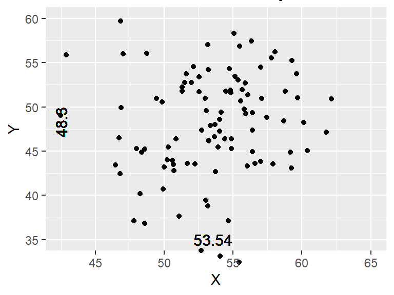
Visualizations!

Visualize: ggplot2
Now, let’s get to visualizing! Let’s explore: what is the relationship between players’ positions and the number of goals they score?
Let’s begin at the end:
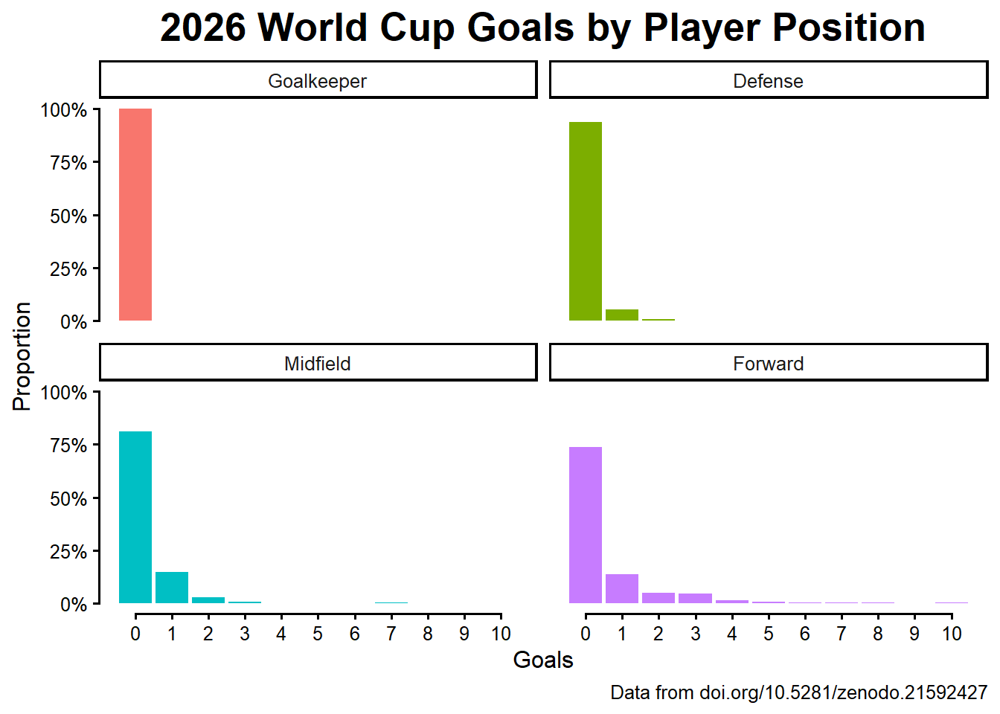
Visualize: ggplot2
Now, let’s get to visualizing! Let’s explore: what is the relationship between players’ positions and the number of goals they score?
When we just call the ggplot() function with our data as the first argument, we get this blank area
ggplot() works by adding layers and layers onto a plot object
This is not a very exciting plot, but you can think of it like an empty canvas you’ll paint the remaining layers of your plot onto. — R4DS
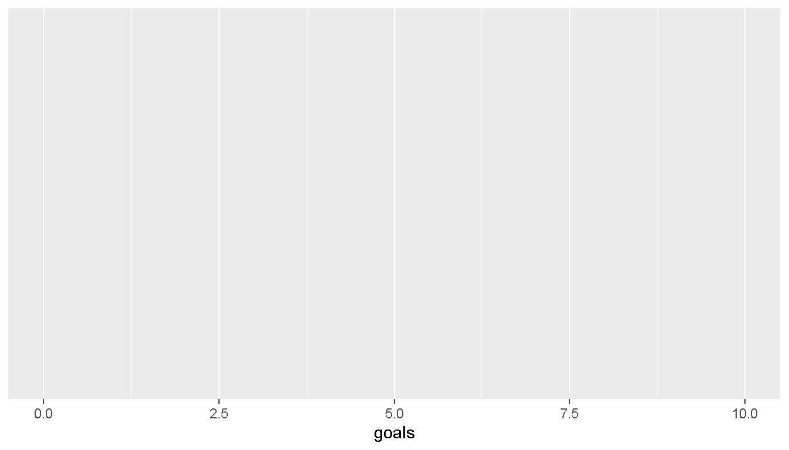
ggplot(data = player_stats)Visualize: ggplot2
Now, let’s get to visualizing! Let’s explore: what is the relationship between players’ positions and the number of goals they score?
Next, we want to tell ggplot() what information we want in our plot and where we want it
We do this with the aes() (“aesthetics”) function in the mapping argument
How variables are mapped onto specific parts of the plot
We can choose to put goals on the x-axis.
What do we get?

ggplot(data = player_stats,
mapping = aes(x = goals))Visualize: ggplot2
Now, let’s get to visualizing! Let’s explore: what is the relationship between players’ positions and the number of goals they score?
Still no data, though!
Need to define some geom, a geometric display of our data
Will usually start with geom_
geom_line() |
line graph |
geom_bar() |
bar graph |
geom_boxplot() |
boxplot |
geom_point() |
scatterplot |

ggplot(data = player_stats,
mapping = aes(x = goals)) +
geom_bar()Visualize: ggplot2
Now, let’s get to visualizing! Let’s explore: what is the relationship between players’ positions and the number of goals they score?
Can vary the bars by color to show different positions.
Do we need to change the mapping or the geom?
Can modify the color of a geom_bar() by setting the fill mapping The color mapping is also an option, but that will just change the outline color.

ggplot(data = player_stats,
mapping = aes(x = goals, fill = position)) +
geom_bar()Visualize: ggplot2
Now, let’s get to visualizing! Let’s explore: what is the relationship between players’ positions and the number of goals they score?
So crowded, and so hard to compare between groups! So, let’s separate by position.
Can use facet_wrap(~ grouping_variable) to make different panels. Or facet_wrap("grouping_variable").
ggplot(data = player_stats,
mapping = aes(x = goals, fill = position)) +
geom_bar() +
facet_wrap(~ position)Data Types Interlude: Factors
New data type (to us): factor variable: a built-in data type that R provides for categorical variables
Sets fixed possibilities of values that the variable can take on
If you have a variable with days of the week…
days <- c("Tues", "Wed", "Thurs")Nothing preventing typos and no sensible sorting
moredays <- c("Teus", "Wed", "Thrus")
sort(days)[1] "Thurs" "Tues" "Wed" Factors help with both. Start by creating a vector of levels. Can also make labels for nicer printing.
weekday_levels <- c("Mon", "Tues", "Wed", "Thurs", "Fri")
weekday_labels <- c("Mon" = "Monday",
"Tues" = "Tuesday",
"Wed" = "Wednesday",
"Thurs" = "Thursday",
"Fri" = "Friday")And now make a factor
days_fct <- factor(days, levels = weekday_levels,
labels = weekday_labels)Transform: Factor Variables
Will convert to NA if not valid level
factor(moredays, levels = weekday_levels)[1] <NA> Wed <NA>
Levels: Mon Tues Wed Thurs FriBetter sorting
sort(days_fct)[1] Tuesday Wednesday Thursday
Levels: Monday Tuesday Wednesday Thursday FridayData Types Interlude: Factors
Within a dataframe, we can modify or create columns by pulling the column out with $ and assigning it to something new.
position_levels <- c("GK", "DEF", "MID", "FWD")
position_labels <- c("GK" = "Goalkeeper",
"DEF" = "Defense",
"MID" = "Midfield",
"FWD" = "Forward")player_stats$position_fct <- factor(player_stats$position,
levels = position_levels,
labels = position_labels)
player_stats$position_fct |> head()[1] Goalkeeper Defense Defense Defense Defense Midfield
Levels: Goalkeeper Defense Midfield ForwardVisualize: ggplot2
Now, let’s get to visualizing! Let’s explore: what is the relationship between players’ positions and the number of goals they score?
Swap position to position_fct
The absolute number of goals might be a little harder to interpret, though.
We can add a mapping argument to geom_bar() to tell it to plot proportions instead of counts.
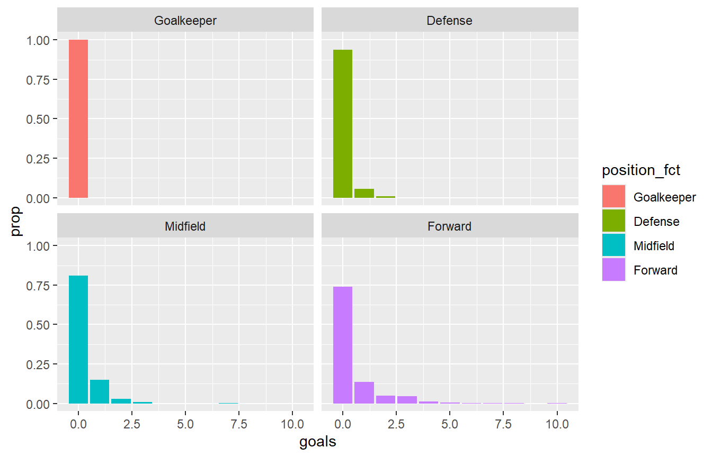
ggplot(data = player_stats,
mapping = aes(x = goals, fill = position_fct, y = after_stat(prop))) +
geom_bar() +
facet_wrap(~ position_fct)Visualize: ggplot2
Now, let’s get to visualizing! Let’s explore: what is the relationship between players’ positions and the number of goals they score?
Now, we can start tidying this up. Let’s make the y-axis have percentage signs with label_percent() from the scales package, let’s make the x-axis only have integers (since goals scored is a count variable) by specifying its breaks argument.
With each of these scales_ functions, we can pass in an scale label as the first argument.
ggplot(data = player_stats,
mapping = aes(x = goals, fill = position_fct)) +
geom_bar(mapping = aes(y = after_stat(prop))) +
facet_wrap(~ position_fct) +
scale_y_continuous("Proportion", limits = 0:1, labels = scales::label_percent()) +
scale_x_continuous("Goals Scored", breaks = 0:10)Visualize: ggplot2
Now, let’s get to visualizing! Let’s explore: what is the relationship between players’ positions and the number of goals they score?
To help anyone viewing our plot understand it, we can add some labels with the labs() function.
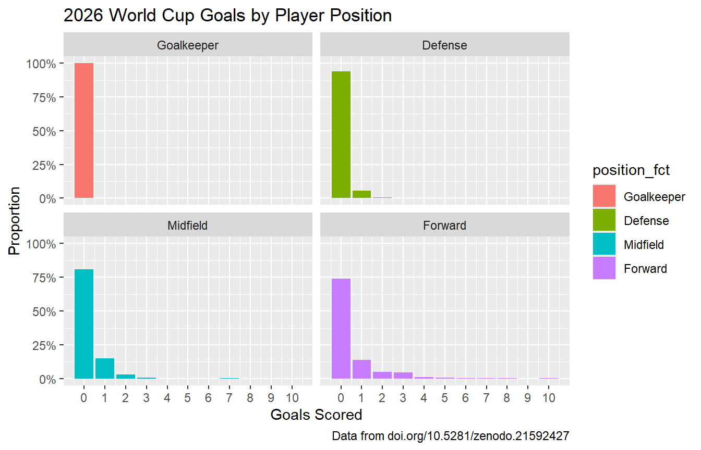
ggplot(data = player_stats,
mapping = aes(x = goals, fill = position_fct)) +
geom_bar(mapping = aes(y = after_stat(prop))) +
facet_wrap(~ position_fct) +
scale_y_continuous("Proportion", limits = 0:1, labels = scales::label_percent()) +
scale_x_continuous("Goals Scored", breaks = 0:10) +
labs(title = "2026 World Cup Goals by Player Position",
caption = "Data from doi.org/10.5281/zenodo.21592427")Visualize: ggplot2
Now, let’s get to visualizing! Let’s explore: what is the relationship between players’ positions and the number of goals they score?
To improve the overall look of the plot, we can add a ggplot theme.
I like increasing the base_size argument to improve readability.
ggplot(data = player_stats,
mapping = aes(x = goals, fill = position_fct)) +
geom_bar(mapping = aes(y = after_stat(prop))) +
facet_wrap(~ position_fct) +
scale_y_continuous("Proportion", limits = 0:1, labels = scales::label_percent()) +
scale_x_continuous("Goals Scored", breaks = 0:10) +
labs(title = "2026 World Cup Goals by Player Position",
caption = "Data from doi.org/10.5281/zenodo.21592427") +
theme_classic(base_size = 12)Visualize: ggplot2
We can use the theme() function to further customize our plot.
Documentation for everything you can do with the theme() function
We can remove the redundant color legend by setting legend.position to "none".
We can center and increase the plot title by specifying that it is a text element with element_text(), and customizing its hjust (horizontal justification) and size argument.
I also like to cap the axes with the guides() and guide_axis(cap = T) function.
ggplot(data = player_stats,
mapping = aes(x = goals, fill = position_fct)) +
geom_bar(mapping = aes(y = after_stat(prop))) +
facet_wrap(~ position_fct) +
scale_y_continuous("Proportion", limits = 0:1, labels = scales::label_percent()) +
scale_x_continuous("Goals Scored", breaks = 0:10) +
labs(title = "2026 World Cup Goals by Player Position",
caption = "Data from doi.org/10.5281/zenodo.21592427") +
guides(x = guide_axis(cap = T),
y = guide_axis(cap = T)) +
theme_classic(base_size = 12) +
theme(legend.position = "none",
plot.title = element_text(size = 20, hjust = 0.5, face = "bold"),
text = element_text(family = "Roboto"))Some More ggplots
That was a barplot created with geom_bar(), which plots discrete variables. To plot the distribution of continuous variables, we can use a histogram with geom_histogram() or a density plot with geom_density().

ggplot(data = player_stats,
mapping = aes(x = minutes_played)) +
geom_histogram(binwidth = 30)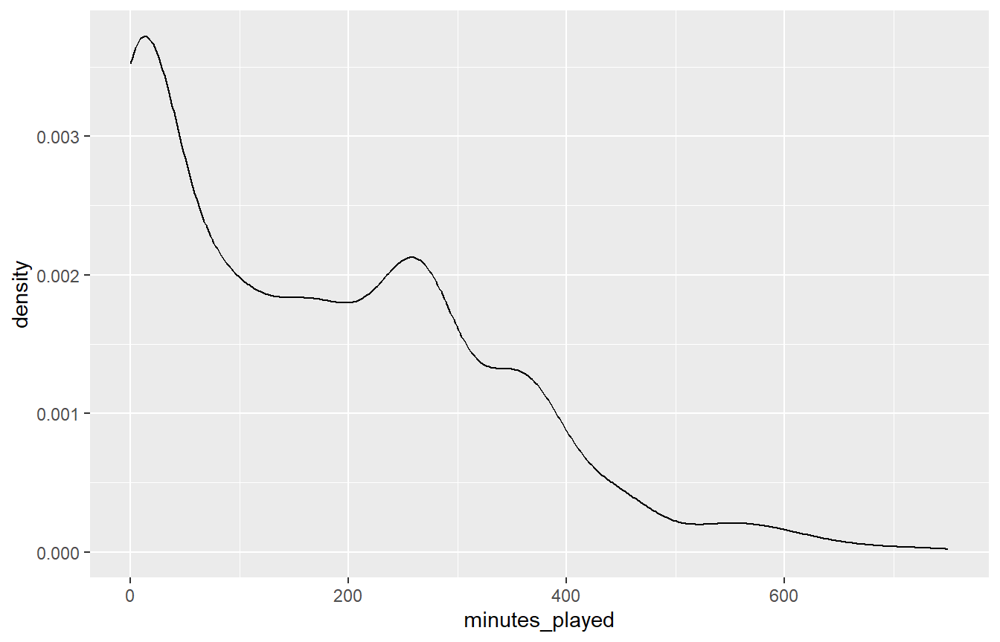
ggplot(data = player_stats,
mapping = aes(x = minutes_played)) +
geom_density()Some More ggplots
Modify the number of bins in the histogram by either setting binwidth (width on the x-axis for each bin) or bins (number of bins).
binwidth = 10
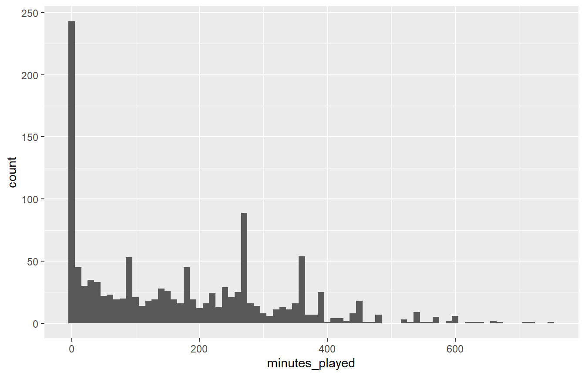
ggplot(data = player_stats,
mapping = aes(x = minutes_played)) +
geom_histogram(binwidth = 10)bins = 15
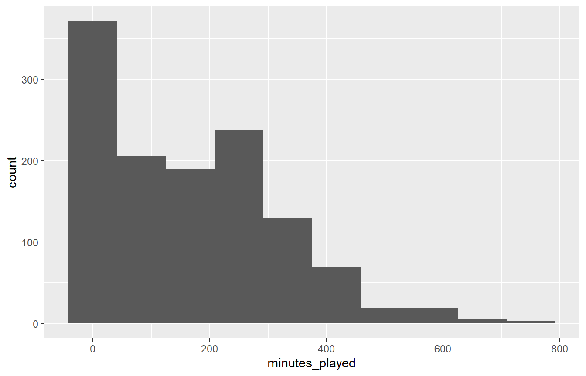
ggplot(data = player_stats,
mapping = aes(x = minutes_played)) +
geom_histogram(binwidth = 10)Some More ggplots
Violin plots help us easily compare distributions. Create them with geom_violin(). Specify the groups on the y-axis by specifying aes(y = position_fct).

ggplot(data = player_stats,
mapping = aes(x = minutes_played, y = position_fct)) +
geom_violin()Some More ggplots
If we want to layer on the observed data by adding a point plot, do we need to change the mapping or the geom? geom_jitter()!
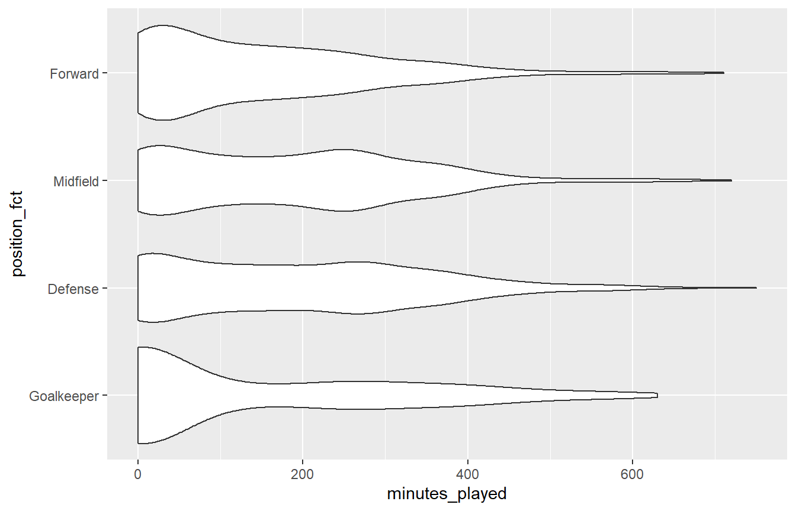
ggplot(data = player_stats,
mapping = aes(x = minutes_played, y = position_fct)) +
geom_violin()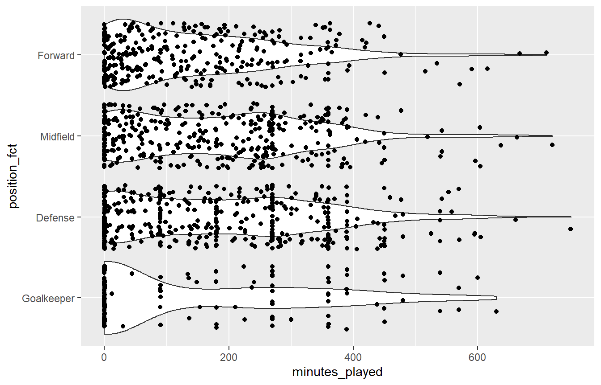
ggplot(data = player_stats,
mapping = aes(x = minutes_played, y = position_fct)) +
geom_violin() +
geom_jitter()Some More ggplots
An note about geom_jitter(): by default it will add noise in both the x- and y-direction (width and height arguments). This may not be appropriate for all cases: here, the default behavior hides that values in category B are rounded.
geom_jitter()

d |>
ggplot(aes(x = measurement, y = category)) +
geom_violin() +
geom_jitter()geom_jitter(width = 0)

d |>
ggplot(aes(x = measurement, y = category)) +
geom_violin() +
geom_jitter(width = 0)Some More ggplots
Can also layer on a boxplot!

ggplot(data = player_stats,
mapping = aes(x = minutes_played, y = position_fct)) +
geom_violin() +
geom_boxplot(width = 0.2) +
geom_jitter()Some More ggplots
To plot two continuous variables, we can specify both the x- and y-axes in aes() and add a point plot with geom_point().
If we wanted to add a trendline to this, would we need to change the mapping or geom? geom_smooth()!

ggplot(data = player_stats,
mapping = aes(x = minutes_played, y = goals)) +
geom_point()Some More ggplots
We can add a trend line with geom_smooth(). Note that geom_smooth() picks up the same x and y assignment as already specified in aes().
If we wanted to see the points with color representing player position, would we need to change the mapping or geom? aes(color = position_fct)!
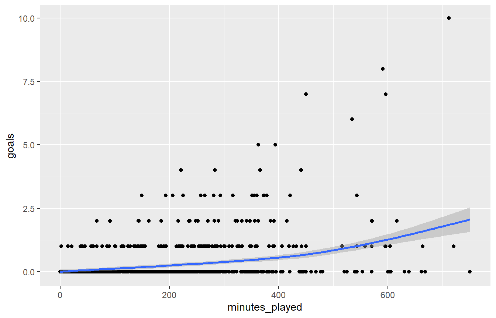
ggplot(data = player_stats,
mapping = aes(x = minutes_played, y = goals)) +
geom_point() +
geom_smooth()Some More ggplots
If we want to see the points labeled by player position, we can specify the color mapping in aes(). Also, because data is the first argument, we can pipe right into ggplot()!

ggplot(data = player_stats,
mapping = aes(x = minutes_played, y = goals, color = position_fct)) +
geom_point() +
geom_smooth()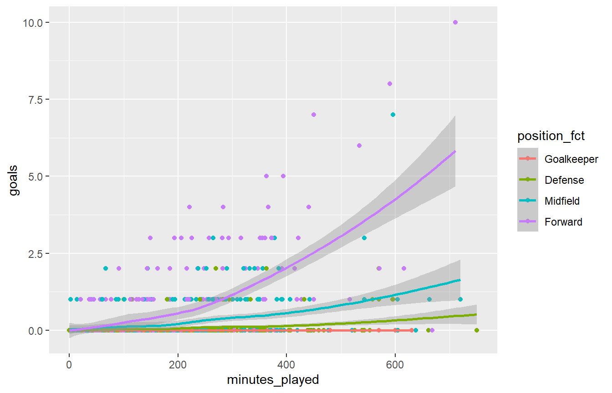
ggplot(data = player_stats,
mapping = aes(x = minutes_played, y = goals, color = position_fct)) +
geom_point() +
geom_smooth()Visualize: ggplot2
Another example of tidying a plot up. Note how similar all the code is!
We can use the theme() function to further customize our plot.
We can remove the redundant color legend by setting legend.position to "none".
We can center and increase the plot title by specifying that it is a text element with element_text(), and customizing its hjust (horizontal justification) and size argument.
I also like to cap the axes with the guides() and guide_axis(cap = T) function.
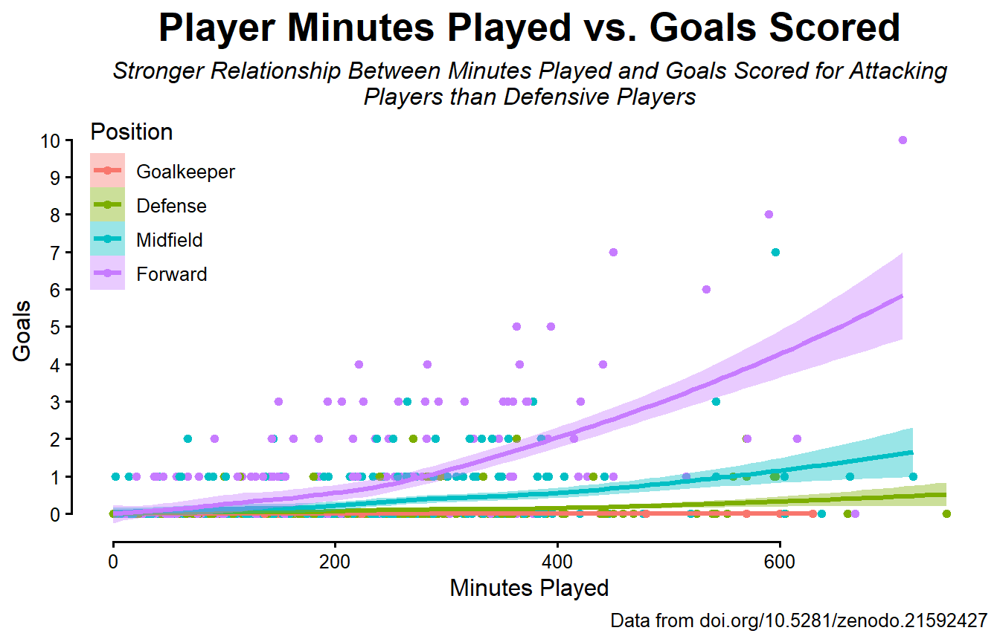
ggplot(data = player_stats,
mapping = aes(x = minutes_played, y = goals,
color = position_fct, fill = position_fct)) +
geom_point() +
geom_smooth() +
guides(x = guide_axis(cap = T),
y = guide_axis(cap = T)) +
scale_y_continuous(breaks = 0:10) +
labs(title = "Player Minutes Played vs. Goals Scored",
subtitle = str_wrap("Stronger Relationship Between Minutes Played and Goals Scored for Attacking Players than Defensive Players",
caption = "Data from doi.org/10.5281/zenodo.21592427"),
x = "Minutes Played", y = "Goals",
color = "Position", fill = "Position") +
theme_classic(base_size = 12) +
theme(legend.position = "inside",
legend.position.inside = c(.1, .8),
plot.title = element_text(size = 20, hjust = 0.5, face = "bold"),
plot.subtitle = element_text(size = 12, hjust = 0.5, face = "italic"),
text = element_text(family = "Roboto"))Visualizations: Resources
Plotting in ggplot2 is very powerful and flexible but can take some getting used to. None of these functions or arguments need to be memorized. You will always have access to reference material and documentation.

Lab 02 Activity
Objectives:
Do some basic R!
Get familiar with Quarto